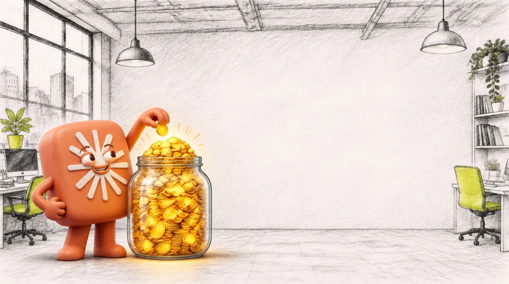
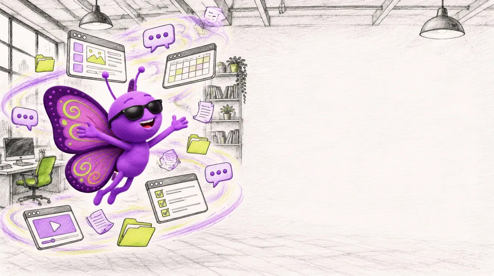
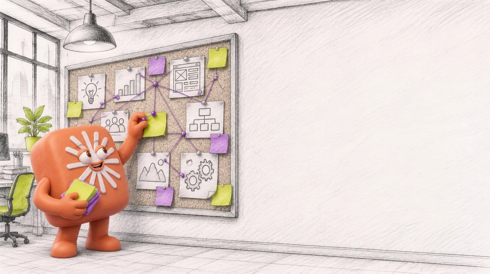
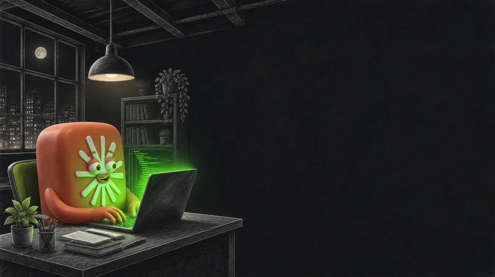
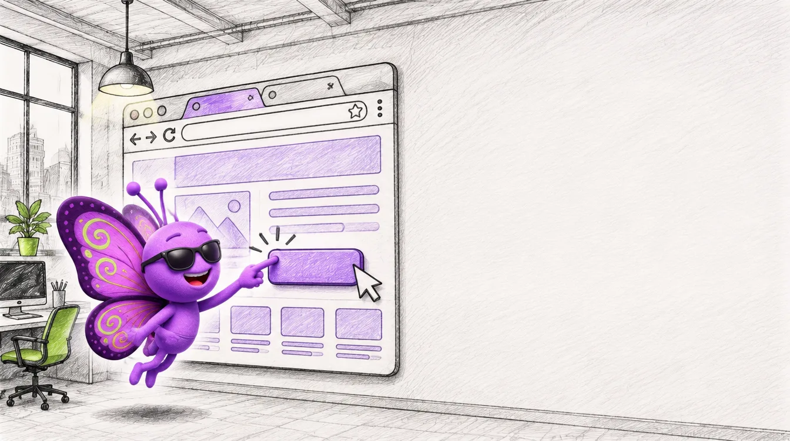
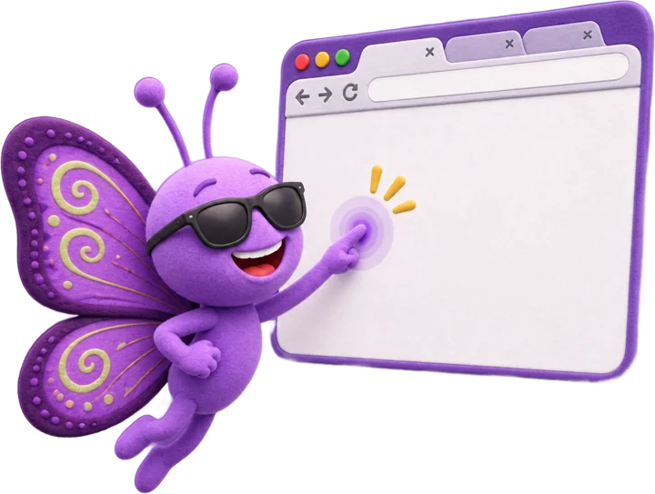
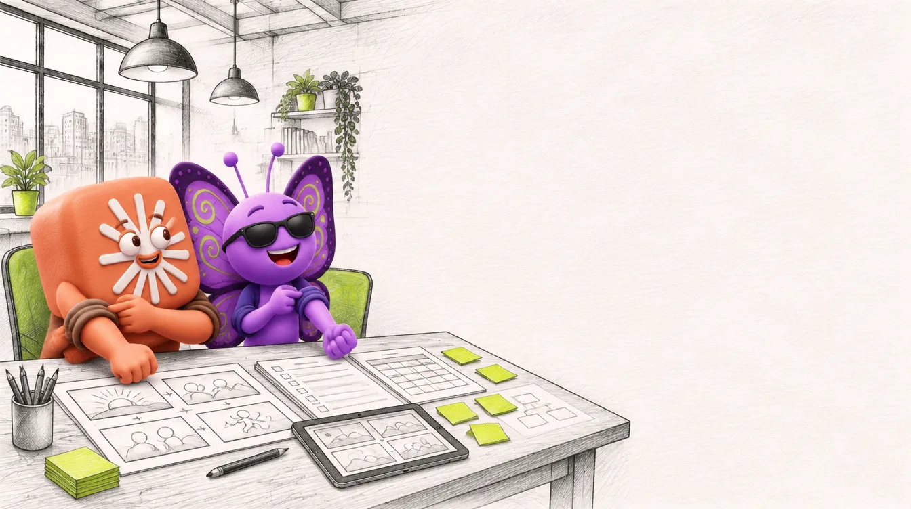

מפגש 1 מתוך 4
Claude, השותף החדש שלך
מי זה Claude? היכרות, סביבות עבודה ומודלים
להכשיר את Claude כמו עובד חדש בצוות
מטרת הסדנה: ללמוד להשתמש ב־Claude נכון ובאופן אפקטיבי, ובעיקר להפוך אותו לשותף עבודה אמיתי.
- 1מי זה Claude? היכרות, סביבות עבודה ומודלים
- 2Skills: מלמדים את Claude את שיטת העבודה שלכם
- 3Claude כמפיק: לומדה בשיטת vibe coding
- 4Claude בהפקות וידאו: יום באולפן
מה עושים היום
- נכיר: אני, אתם ו־Claude
- המודלים, ה־Effort והטוקנים
- צריכת טוקנים חכמה
- סיור ב־Claude.ai ופתיחת פרויקט
- מתי Claude Code ומתי Claude in Chrome
- למה Claude למפתחי למידה
- התנסות: הפרויקט הראשון שלכם

שחר עזר
מנהל תחום בינה מלאכותית וצוות פיתוח למידה ב־Gada-Lnet.
- מנחה וובינרים וסדנאות בנושאי כלי AI
- מלווה ארגונים בתהליכי הטמעה
- מאמין בהטמעה נכונה ומבוקרת, כזו שיוצרת סקרנות ולא פחד
מי כבר עבד עם Claude?
ובשביל מה?
משפחה של מודלי שפה גדולים שפיתחה חברת Anthropic. והמשפט שמסכם את הגישה:
Hand Claude a task, not just a question.
מתוך דף המוצר של Claude
המשימה
פיתוח אחראי של AI מתקדם, לטובת האנושות בטווח הארוך.
האופי
מאומן להיות מועיל, ישר ולא מזיק.
הטיפ
לדבר איתו כמו עם עמית לעבודה, ולשפר בסבבים.

מקורות: claude.com/product/overview, anthropic.com/company, support.claude.com/en/articles/8114491
משפחת המודלים
Fable 5.1
Opus 5.5
Sonnet 5.5
Haiku 5.5
לכולם חלון הקשר של מיליון טוקנים. מחליפים מודל בלחיצה על שמו, ליד כפתור השליחה.
מקורות: platform.claude.com/docs/en/about-claude/models/overview, support.claude.com/en/articles/8664678
כמה Claude מתאמץ
יותר Effort: תשובה יסודית יותר, איטית יותר, ויותר טוקנים.
- ליום־יום ברירת המחדל מספיקה
- לתכנון או לניתוח מסמכים מעלים
- במודלים החדשים החשיבה תמיד פועלת, ו־Effort קובע כמה
מקור: support.claude.com/en/articles/8664678

מה לעזאזל טוקן?
היחידה הקטנה ביותר שהמודל עובד איתה: מילה, חלק ממילה, אפילו תו.
כמה תווים יש בטוקן תלוי בשפה ובמודל.
מקורות: platform.claude.com/docs/en/about-claude/glossary, models/overview, support.claude.com/en/articles/8606394
שיחה ארוכה עולה יותר
מגבלת שימוש
חלון של 5 שעות מההודעה הראשונה, ועוד מגבלה שבועית. Claude.ai, Claude Code ו־Desktop מושכים מאותה מכסה.
מגבלת אורך
כמה שיחה אחת יכולה להכיל. אורך השיחה הנוכחית משפיע על הצריכה, וגם קבצים, כלים, מודל ו־Effort.
תכתוב לי מטרות למידה ליחידה
הנה שש מטרות לפי בלום...
תקצר את השלישית
בטח, הנה גרסה קצרה...
ועכשיו תסריט ללומדה
מתחיל במסך הפתיחה...
מקורות: support.claude.com/en/articles/11647753, support.claude.com/en/articles/9797557
צורכים טוקנים בחוכמה
מקורות: support.claude.com/en/articles/9797557, support.claude.com/en/articles/11647753

Claude.ai
מה יש בסביבת העבודה, ולמה כל דבר משמש.
מה יש ב־Claude.ai
שיחה ו־Cowork
Claude גם עונה וגם מבצע משימות ארוכות. מתארים תוצאה וחוזרים לעבודה גמורה.
Projects
חדר עבודה עם שיחות, קבצים והנחיות משלו.
Artifacts
מסמך, מצגת או כלי שנפתח ליד השיחה, עם ייצוא ל־Word, PDF ו־PowerPoint.
Research
חיפושים שנבנים זה על זה, עד דוח עם מקורות.
Connectors
חיבור ל־Google Drive, Slack ועוד, עם ההרשאות שלכם.
Skills
הוראות ש־Claude טוען רק כשצריך. המפגש הבא.
מקורות: support.claude.com/en/articles/16761823, 13345190, 9517075, 17153992, 11088861, 11176164, 12512176

Projects: חדר עבודה לכל תוצר
ידע
מסמכים וקבצים ש־Claude משתמש בהם בכל שיחה בפרויקט.
הנחיות
טון, קהל יעד ופורמט, לכל השיחות בפרויקט.
- הקשר לא עובר בין שיחות, אלא אם הוא שמור בידע
- ידע גדול? Claude מחפש בתוכו, עד פי 10 קיבולת
- בתוכנית החינמית עד 5 פרויקטים
מקורות: support.claude.com/en/articles/9517075, 9519177, 11473015
פותחים פרויקט
מקור: support.claude.com/en/articles/9519177
Project
ידע רקע שטעון תמיד.
החומרים של התוצר הזה: מסמך פיצוח, תוכן, הערות לקוח.
Skill
ידע פרוצדורלי שנטען כשצריך.
איך אתם עושים דברים: מטרות למידה, תסריט לומדה, עריכה לשונית.
מקור: support.claude.com/en/articles/12512176. ניפגש עם Skills לעומק במפגש הבא.

Claude Code
מתי? כשהעבודה היא קבצים ולא שיחה.
- Desktop, VS Code, טרמינל או claude.ai/code
- בתוכניות בתשלום. לעבודת ידע בלי קוד: Cowork
מקורות: code.claude.com/docs/en/overview, support.claude.com/en/articles/14552382, 13345190

Claude in Chrome
קורא, לוחץ, מקליד ומנווט באתרים, לצדכם.
- מחקר, טפסים, משימות חוזרות במערכת
- מקליטים workflow ומריצים שוב, או מתזמנים
שימו לב
רק בכרום ורק בתוכניות בתשלום. אתר יכול להסתיר הוראות זדוניות, ו"הסיכון אינו אפס". לא לחשבונות כספיים, משפטיים, רפואיים או רגישים. עדיף פרופיל דפדפן נפרד.
מקורות: support.claude.com/en/articles/12012173, 12902428
איזה כלי מתי?
העבודה בשיחה ובמסמכים
שיחה ו־Cowork
העבודה בקבצים ובקוד
Claude Code
העבודה באתר
Claude in Chrome

למה Claude, למפתחי למידה?
מה ש־Anthropic מבטיחה, ומה זה אומר לנו.
תסריטים, מסמכי פיצוח ושאלות
חומר הגלם של הקורס, בשלמותו
פרויקט לכל לומדה או קורס
סטוריבורד, אינטראקציה, דף עבודה
הסטנדרט של הצוות, בכל פעם
מקורות: claude.com/product/overview, support.claude.com/en/articles/8606394, 9517075, 17153992, 12512176

בואו נתחיל להתנסות
הפרויקט הראשון שלכם
- פרויקט לתוצר שאתם עובדים עליו עכשיו
- הנחיות קבועות: קהל, טון, פורמט
- שני מסמכי רקע
- למפגש הבא: שיחה שעבדה ושיחה שלא
45 דקות
תמיד מוזמנים להתייעץ
ההקלטה, המצגת והקישורים מחכים באזור המשתתפים.
מקורות (נבדקו ב־7.11.2026)
- anthropic.com/company
- claude.com/product/overview
- claude.com/pricing
- platform.claude.com/docs/en/about-claude/models/overview
- platform.claude.com/docs/en/about-claude/glossary
- code.claude.com/docs/en/overview
- support.claude.com/en/articles/8114491 (Get started with Claude)
- support.claude.com/en/articles/8664678 (Model, effort and thinking)
- support.claude.com/en/articles/8606394 (Context window)
- support.claude.com/en/articles/11647753 (Usage and length limits)
- support.claude.com/en/articles/9797557 (Usage limit best practices)
- support.claude.com/en/articles/16761823 (Cowork and chat are one Claude)
- support.claude.com/en/articles/13345190 (Get started with Cowork)
- support.claude.com/en/articles/9517075 (What are projects)
- support.claude.com/en/articles/9519177 (Create and manage projects)
- support.claude.com/en/articles/11473015 (RAG for projects)
- support.claude.com/en/articles/17153992 (Artifacts)
- support.claude.com/en/articles/11088861 (Research)
- support.claude.com/en/articles/11176164 (Connectors)
- support.claude.com/en/articles/12512176 (What are Skills)
- support.claude.com/en/articles/14552382 (First day in Claude Code)
- support.claude.com/en/articles/12012173 (Get started with Claude in Chrome)
- support.claude.com/en/articles/12902428 (Use Claude in Chrome safely)